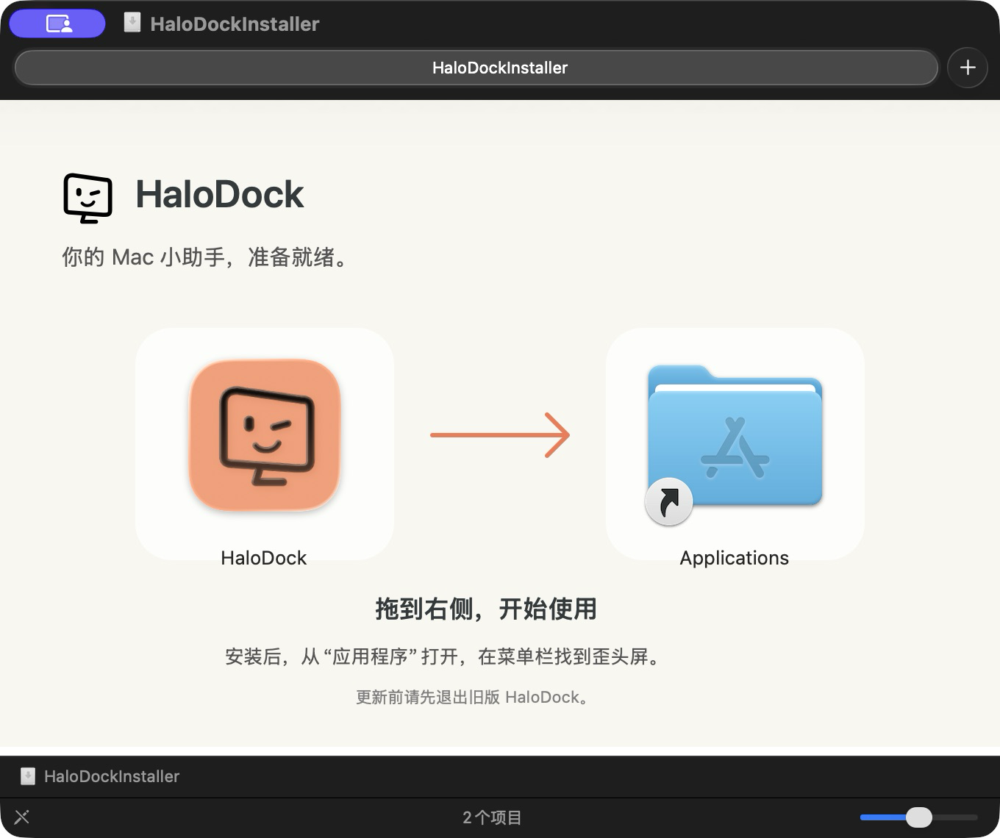

Mac 的状态，
心里有数。
电池、内存和硬盘余量，打开就能看到。切换日常、工作、会议、下载场景，让常用工具按任务就位。
场景面板 · 真实系统状态从一个入口，顺着做下去。
电池、内存和硬盘余量，打开就能看到。切换日常、工作、会议、下载场景，让常用工具按任务就位。
场景面板 · 真实系统状态选好范围，原地标注、识字或贴到桌面。想留下整段内容？滚动截图和 GIF，也在同一条工具栏里。
截图行动卡 · 本机识字把截图、文字和文件收进同一个工作台。选择目标再保存，常用回复还能变成随时复制的文本片段。
工作台 · 快捷文本片段Markdown 直接看排版，代码可看源码，PDF 原地阅读。需要的时候再导出、复制，继续手头的工作。
文档预览 · Markdown 导出DOCK 窗口预览
鼠标停在 Dock 的 App 图标上，查看已打开的窗口缩略图。Finder 也支持，点击预览就能切换到对应窗口。
HaloDock 设置 → Dock 预览 → 开启“悬停 Dock 图标预览窗口”。
按页面引导允许“辅助功能”和“屏幕录制”；若系统提示重启 App，重新打开后再试。
在图标上停留约 0.4 秒。最多显示 6 个窗口，可横向浏览，移开后收起。
最小化、受保护或暂时无法捕获的窗口可能显示占位卡。实际效果取决于系统权限、Space 和目标 App；截图与录制期间会暂停预览。
认准 HaloDock 的预览。v0.4.1 起，浮层标有“HaloDock 窗口预览”。关闭此开关后仍出现的预览，可能来自系统或其他工具。
熟悉的 Mac 体验
跟随系统的外观，分门别类的设置。常用的留下，偶尔用的收好。
一眼找到设置左侧分类，右侧调整。快捷键、场景、权限各有位置。
面板由你决定组件有小、中、大三种尺寸，工具可以排序、隐藏。
陪你使用，也尊重边界截图与识字在本机处理，工作台资料也保存在本机。
CAPTURE. COLLECT. REUSE.
截图行动卡直接加入工作台，先选目标工作台，文字、图片和文件按任务归拢。Markdown、PDF 等文档原地预览；常用回复存成片段，日期与时间在复制时自动填入。
DRAG. DROP. DONE.
下载 DMG，把 HaloDock 拖到 Applications。
从“应用程序”打开，在菜单栏和它打个招呼。

A FEW GOOD QUESTIONS
当前发布的安装包适用于 Apple Silicon（M 系列芯片）Mac，需要 macOS 13 或更新版本。Intel 安装包暂未提供。
只记录 App 运行期间新复制的文字、图片和文件，最多 50 条，不上传服务器。主动加入工作台的内容和保存的文本片段会独立保存在本机，跨重启保留，可手动删除。普通记录保存在内存，默认 1 小时自动清理，退出后清空；可在设置调整。主动固定的最多 10 条（总计 16 MB）保存在本机，取消固定或删除时移除。支持单张 8 MB 以内的图片和 100 KB 以内的文本；带保密、临时、自动生成标记的内容会跳过，未带标记的敏感文本仍可能被记录。
当前版本为 ad-hoc 签名，尚未经过 Apple Developer ID 签名与公证。如果系统阻止打开，请查看“系统设置 → 隐私与安全性”的对应提示。源码和每版 SHA-256 校验文件均在 GitHub 提供。
需要允许 HaloDock 通过“自动化”控制 Finder。首次确认清空时系统会请求授权；若已拒绝，App 提供“前往设置”入口。清空属于永久删除，操作前会再次确认。
选区后在底部工具栏点击对应操作。滚动截图点击开始后，在选区内缓慢滚动，停稳后自动拼接；可暂停，完成后预览、保存或选择目标工作台。最多 120 段，动态内容可能无法匹配。GIF 有 3 秒倒计时，最长 15 秒，不录制声音。完成后可保存或加入工作台。
在 App 设置的“Dock 预览”中主动开启，默认关闭。需要 macOS 14+、辅助功能与屏幕录制权限。悬停 App 或 Finder 图标后查看窗口，点击缩略图切换；无法捕获的窗口显示占位卡。预览仅在本机临时显示，实际效果取决于系统权限和窗口状态。查看开启步骤与权限说明。
从 GitHub Releases 下载新版 DMG，退出旧版后替换安装。App 内“设置 → 软件更新”提供更新入口（v0.1.4 起）；v0.1.6 起支持 App 内显示进度并自动替换，完成后短暂重启。旧版首次升级到 v0.1.6 仍需手动安装。遇到问题可从 App“设置 → 问题反馈”整理草稿，或前往 GitHub Issues，附上 macOS、App 版本和复现步骤，截图前隐藏私人内容。